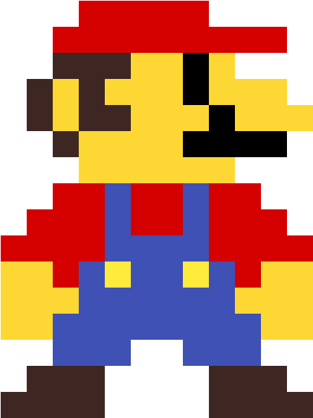

Transiciones
Pasa el cursor las diferentes figuras para ver sus transiciones
O pasa el cursor por aqui
Animaciones
Estas son animaciones que funcionan solas, aunque no es necesario que se inicien solas
La misma animacion se puede emplear de diferentes formas
se pueden cambiar los fotogramas

Y puedes hacer que pare la animacion al pasar el cursor por encima